I opened the Datasets widget and picked the one called HDI (Human Development Index).
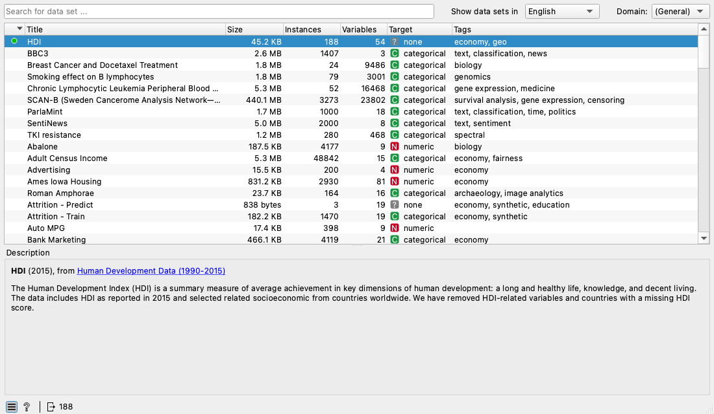
There is more than one human development dataset in the list (there is also an HDI-edu one and a Slovenian one), so I checked three things to make sure I had the right one.
| Check | What I looked at | Result |
|---|---|---|
| 1. The catalogue | The entry in the Datasets widget list | Title is HDI, and its description starts with "The Human Development Index (HDI)". Source: UNDP Human Development Reports, year 2015. |
| 2. What the widget loads | The data coming out of the Datasets widget | File HDI.tab with 188 rows, matching the 188 instances listed, and it has a column named HDI. |
| 3. The values | HDI values in the data against the published UNDP 2015 figures | All 10 countries I checked match, for example Norway 0.949 and Niger 0.353. |
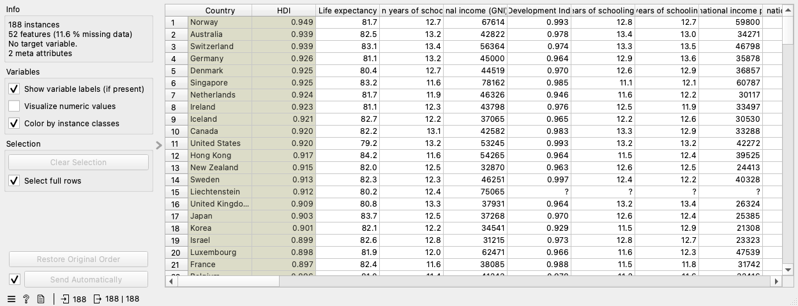
Describing the data. Each row is one country and there are 188 countries. HDI is the Human Development Index for 2015. It is a number between 0 and 1 that the UN uses to show how developed a country is, based on health, education and income. Other than the country name and HDI there are 52 features, and all of them are numbers. They are things like life expectancy, years of schooling, income per person, mortality rates, population and age structure, employment and unemployment, health spending, internet use and inequality.
HDI goes from 0.352 (Central African Republic) to 0.949 (Norway), with a mean of 0.699 and a median of 0.728. The top five are Norway, Australia, Switzerland, Germany and Denmark, and the bottom five are Central African Republic, Niger, Chad, Burkina Faso and Burundi.
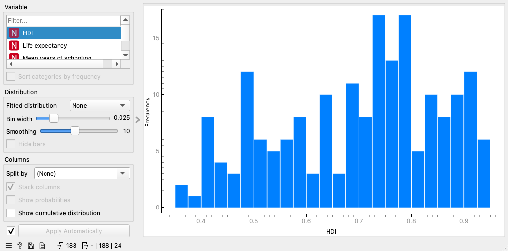
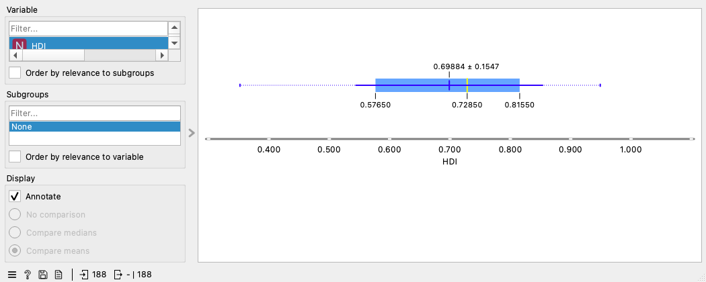
The histogram is not a bell shape. Most countries are between about 0.65 and 0.9, and there is a tail of lower values that goes down to 0.35.
The biggest issue I noticed is missing values. About 12% of all the cells are empty, and 45 of the 52 features have at least one missing value. The worst ones are "Deaths due to Malria (per 100,000 people)" (missing for 94 countries), "Unemployment Youth not in school or employment (% ages 15-24) 2010-2014" (84) and "HIV prevalence, adult (% ages 15-49)" (83). This comes up again in step 5.
The target was not set. HDI was loaded as a meta column next to the country name, so I used Select Columns to move HDI to Target.
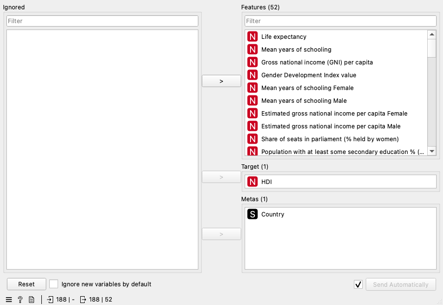
I connected Select Columns to a Preprocess widget and added Normalize Features, set to normalize to the interval [0, 1]. After this every feature goes from 0 to 1. HDI is not changed because it is the target, not a feature.
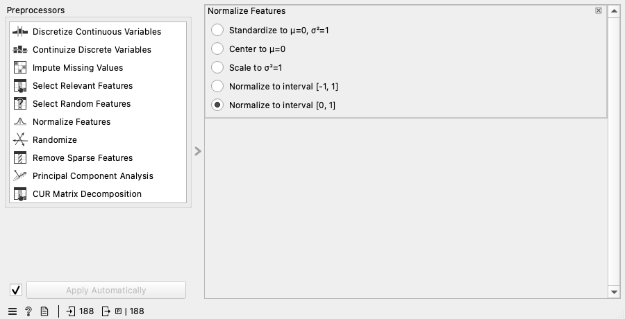
Then I connected Preprocess to a Data Sampler set to a fixed proportion of 50%, and sent the Data Sample to a table I renamed Training set and the Remaining Data to a table I renamed Testing set. Each one has 94 countries and no country is in both. In each table I selected all the rows so that Selected Data sends the whole set to the models, like the sample workflow in the handout.
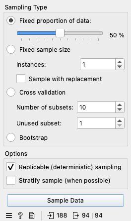
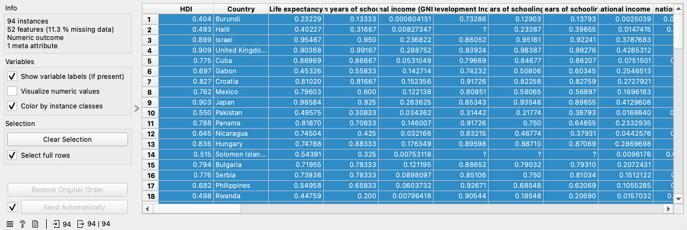
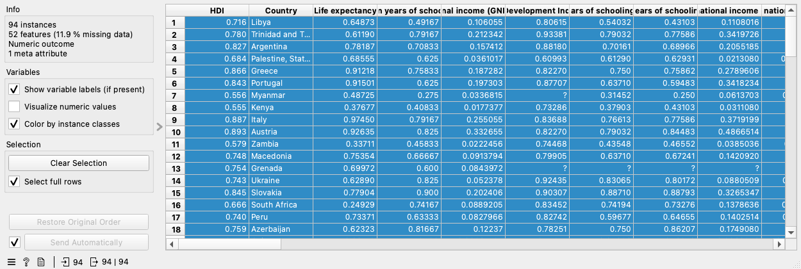
I added three Linear Regression widgets, connected the training set to each one, and renamed them after their settings.
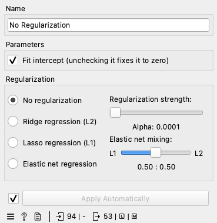
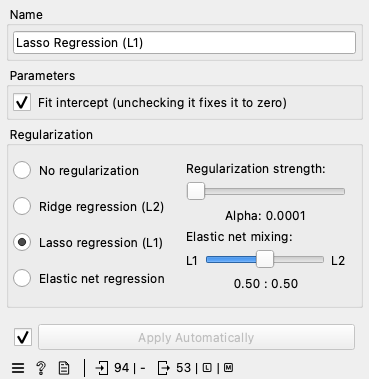
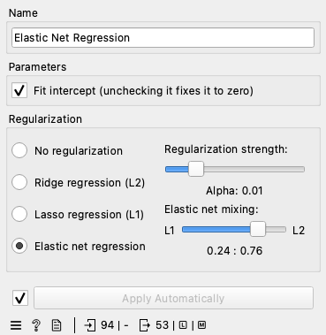
I connected the three learners and the training set to Test and Score, selected cross-validation with 10 folds, and clicked the RMSE header to order the models from smallest to largest RMSE.
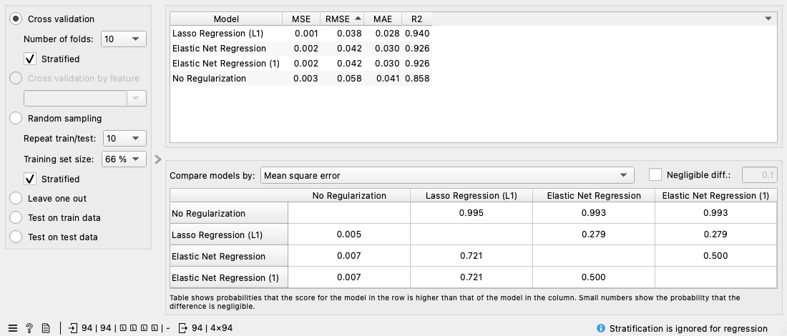
| Model | MSE | RMSE | MAE | R2 |
|---|---|---|---|---|
| Lasso Regression (L1) | 0.0014 | 0.0378 | 0.0281 | 0.940 |
| Elastic Net Regression | 0.0018 | 0.0421 | 0.0303 | 0.926 |
| No Regularization | 0.0034 | 0.0581 | 0.0413 | 0.858 |
Describing the results. All three models predict HDI pretty well. RMSE is in the same units as HDI, so Lasso's RMSE of 0.038 means its predictions are usually off by about 0.04 (HDI goes from 0 to 1). Its R2 of 0.94 means it explains about 94% of the variation in HDI.
Lasso is the best (RMSE 0.0378), then Elastic Net (0.0421), and No Regularization last (0.0581). The model with no regularization is the worst. Its error is about 54% higher than Lasso's. I think this is because there are 52 features and only 94 countries to train on, and a lot of the features measure almost the same thing. Without regularization the model fits the training countries too closely, so it does worse on countries it has not seen. The other two models have to keep their coefficients small, which helps. Lasso beat Elastic Net even though its regularization is much weaker (0.0001 vs 0.01), so a small amount was enough for this data.
I connected the Coefficients output of each model to its own Data Table and clicked the coef column header to sort from the largest coefficient to the smallest. The pictures show the top of each table, and the most negative coefficients are in the table after the pictures. Since I normalized the features to [0, 1] in step 2, the coefficients can be compared to each other. A coefficient is how much the predicted HDI changes when that feature goes from its lowest value to its highest.
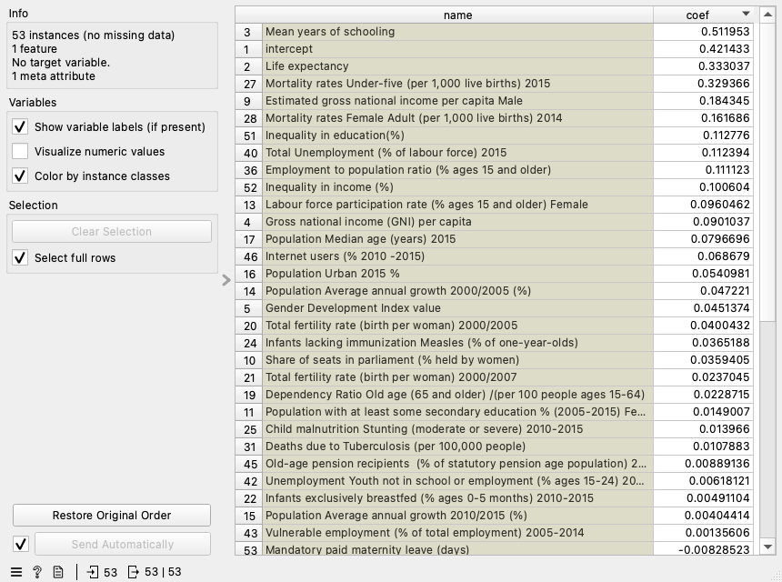
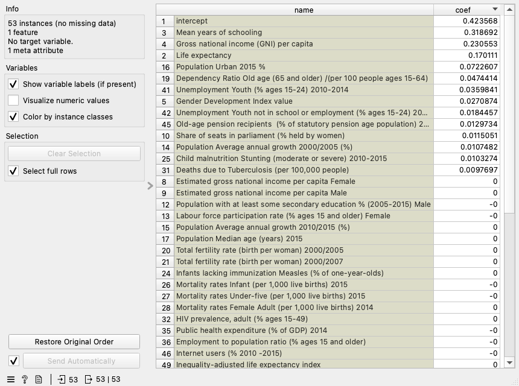
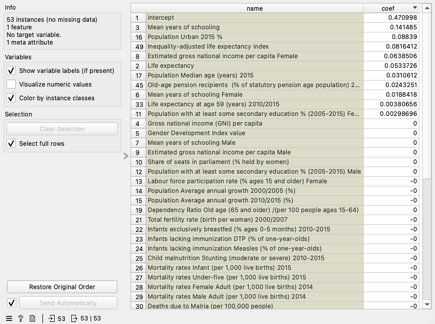
| Model | Features kept (not zero) | Features set to zero | Largest coefficient (absolute) | Intercept |
|---|---|---|---|---|
| No Regularization | 52 | 0 | 0.512 | 0.421 |
| Lasso Regression (L1) | 32 | 20 | 0.319 | 0.424 |
| Elastic Net Regression | 15 | 37 | 0.141 | 0.471 |
| Model | Highest positive | Coef. | Most negative | Coef. |
|---|---|---|---|---|
| No Regularization | Mean years of schooling | +0.512 | Coefficient of human inequality | -0.251 |
| Life expectancy | +0.333 | Mortality rates Infant (per 1,000 live births) 2015 | -0.220 | |
| Mortality rates Under-five (per 1,000 live births) 2015 | +0.329 | Inequality-adjusted life expectancy index | -0.178 | |
| Lasso Regression (L1) | Mean years of schooling | +0.319 | Mean years of schooling Female | -0.063 |
| Gross national income (GNI) per capita | +0.231 | Total Unemployment (% of labour force) 2015 | -0.047 | |
| Life expectancy | +0.170 | Mean years of schooling Male | -0.044 | |
| Elastic Net Regression | Mean years of schooling | +0.141 | Inequality in life expectancy (%) 2010-2015 | -0.063 |
| Population Urban 2015 % | +0.088 | Dependency Ration Young age (0-14) /(per 100 people ages 15-6… | -0.040 | |
| Inequality-adjusted life expectancy index | +0.082 | Inequality in education(%) | -0.006 |
Comparing the three.
Highest positive and negative coefficients. The highest positive coefficient in all three models is Mean years of schooling (+0.51, +0.32 and +0.14). Life expectancy and income per person (GNI per capita, or the estimated income columns) are also near the top each time. The most negative coefficients change from model to model: Coefficient of human inequality with no regularization (-0.25), Mean years of schooling Female in Lasso (-0.06) and Inequality in life expectancy (%) 2010-2015 in Elastic Net (-0.06).
Which variables are most important in the model? Mean years of schooling, life expectancy and income per person. They have the biggest positive coefficients, and they stay large in every model even when regularization removes most of the other features.
Does this make sense? Yes. HDI is made from three things: health (life expectancy), education (years of schooling) and standard of living (income per person). So the model basically found the things HDI is calculated from. The negative ones in Lasso and Elastic Net make sense too. More inequality in life expectancy and more young dependents both go with less developed countries. The negative coefficients in the model with no regularization make less sense, for the reason I gave above, so I trust the regularized models more for reading coefficients.
I duplicated the Elastic Net Regression widget (same settings: 0.01 and 0.24 : 0.76), connected the training set to a Rank widget, ticked RReliefF as the scoring method and set it to select the best ranked 1 feature. The feature it picked is HIV prevalence, adult (% ages 15-49).
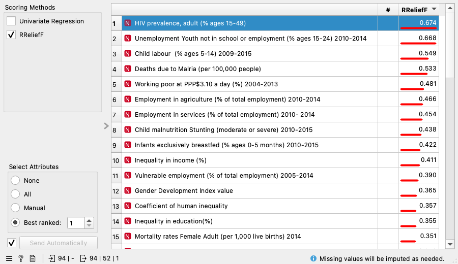
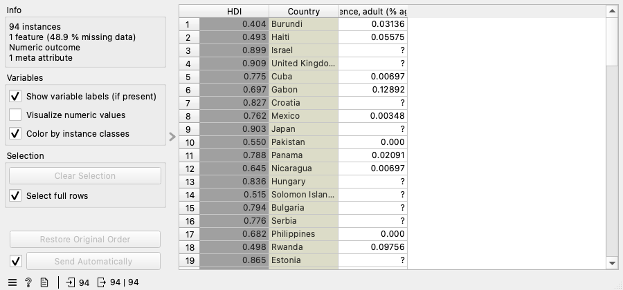
I connected the Rank output to the new Elastic Net widget, and sent its learner to Test and Score and its coefficients to a new Data Table.
| Model | MSE | RMSE | MAE | R2 |
|---|---|---|---|---|
| Lasso Regression (L1) | 0.0014 | 0.0378 | 0.0281 | 0.940 |
| Elastic Net Regression | 0.0018 | 0.0421 | 0.0303 | 0.926 |
| Elastic Net Regression (1) | 0.0018 | 0.0421 | 0.0303 | 0.926 |
| No Regularization | 0.0034 | 0.0581 | 0.0413 | 0.858 |
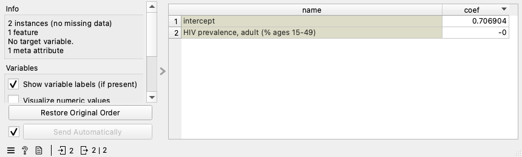
Comparing the scores. In Test and Score, Elastic Net Regression (1) has exactly the same scores as Elastic Net Regression (RMSE 0.0421, R2 0.926). At first I thought it would be worse since it only gets one feature. It is the same because of how Orange works. The model widget sends Test and Score a learner (the method and its settings), not a model that is already trained. Test and Score trains it again on its own data, which is the full training set with all 52 features. Both widgets have the same settings, so the scores are the same.
The one-feature model does show up in the coefficients table, because that table comes from the model the widget trained on the data from Rank. It has one feature, and its coefficient is 0. So the model ignores the feature and just predicts the intercept, 0.707, for every country. That is the average HDI of the training set. To see how a model like that would really score, I ran the same 10-fold cross-validation on the reduced data as an extra check (this is not part of the saved workflow). The RMSE is 0.157 and R2 is -0.04, about 4 times worse than with all the features.
Why this feature? I did not expect HIV prevalence to be the best feature for predicting HDI, so I looked at the Rank table more closely. The features at the top are the ones with the most missing values.
| Rank | Feature | RReliefF | Missing values |
|---|---|---|---|
| 1 | HIV prevalence, adult (% ages 15-49) | 0.674 | 46 |
| 2 | Unemployment Youth not in school or employment (% ages 15-24) 2010-2014 | 0.668 | 41 |
| 3 | Child labour (% ages 5-14) 2009-2015 | 0.549 | 42 |
| 4 | Deaths due to Malria (per 100,000 people) | 0.533 | 46 |
| 5 | Working poor at PPP$3.10 a day (%) 2004-2013 | 0.481 | 40 |
| 6 | Employment in agriculture (% of total employment) 2010-2014 | 0.466 | 29 |
HIV prevalence, adult (% ages 15-49) is missing for 46 of the 94 training countries. Across all the features, the RReliefF score and the number of missing values have a correlation of 0.93. So it looks like the missing values are throwing off RReliefF, and it is not really measuring how useful a feature is. To check this, I filled the gaps with the column average first, and then RReliefF puts "Old-age pension recipients (% of statutory pension age population) 2004-2013" at the top instead. So picking one feature this way did not really work for this data. What I learned is that missing values can mess up a feature ranking, so it is worth checking for them first.
I connected the Testing set to the Test Data input of Test and Score and changed the setting to Test on test data. Now each model is trained on the full training set (94 countries) and scored on the 94 countries it has not seen.
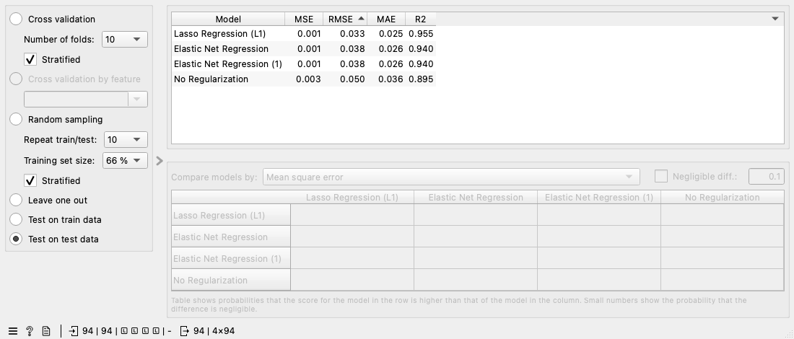
| Model | RMSE (cross-validation) | RMSE (test data) | R2 (cross-validation) | R2 (test data) |
|---|---|---|---|---|
| Lasso Regression (L1) | 0.0378 | 0.0329 | 0.940 | 0.955 |
| Elastic Net Regression | 0.0421 | 0.0380 | 0.926 | 0.940 |
| Elastic Net Regression (1) | 0.0421 | 0.0380 | 0.926 | 0.940 |
| No Regularization | 0.0581 | 0.0501 | 0.858 | 0.895 |
Comparing to cross-validation. The results are similar. The order of the models is the same: Lasso is best, then Elastic Net, then No Regularization. The numbers are close too, with RMSE changing by 0.004 to 0.008. Every model did a little better on the test data than in cross-validation. One reason is that in cross-validation each model learns from 9 of the 10 folds, about 85 countries, and here it learns from all 94. The rest is probably just because these are two different sets of countries.
This tells me the cross-validation scores were a fair estimate. The models were not just memorizing the training countries, because they still work on new ones. It also shows that regularization helps on this data, since the model with no regularization is still the worst on the test set.
I added the four models and connected them to a second Test and Score with 10-fold cross-validation on the training set (through Training set (1), as in the sample workflow). For each model I tried different values for its settings and kept the combination with the lowest RMSE.
| Model | Settings tried | RMSE with default settings | Best RMSE | Best settings |
|---|---|---|---|---|
| AdaBoost | 60 | 0.0357 | 0.0330 | 25 estimators, learning rate 1.0, square loss |
| Random Forest | 32 | 0.0398 | 0.0325 | 50 trees, 20 attributes per split, no subsets smaller than 5 split |
| Neural Network | 320 | 0.2720 | 0.0402 | hidden layers 10, Logistic activation, L-BFGS-B solver, regularization 0.0005, 200 iterations |
| kNN | 66 | 0.0505 | 0.0463 | 6 neighbors, Manhattan metric, by distances weight |
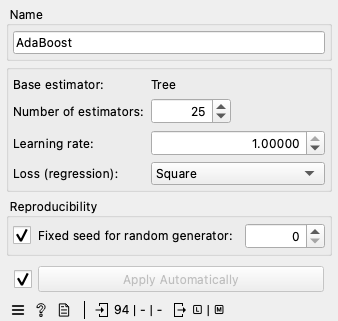
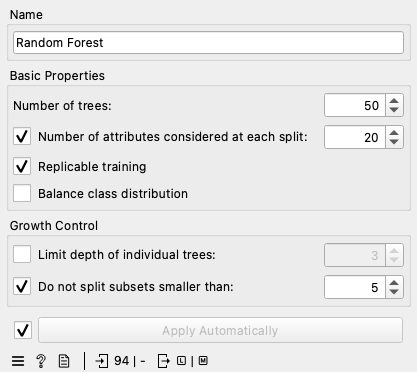
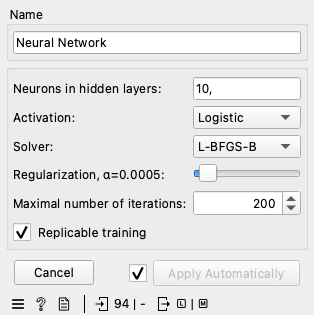
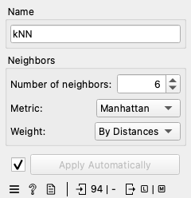
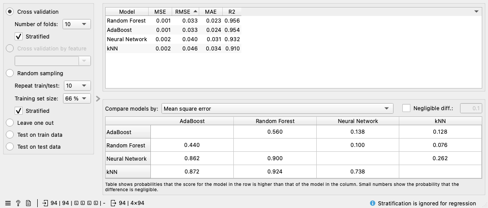
| Rank | Model | Type | RMSE | R2 |
|---|---|---|---|---|
| 1 | Random Forest | Step 7 | 0.0325 | 0.956 |
| 2 | AdaBoost | Step 7 | 0.0330 | 0.954 |
| 3 | Lasso Regression (L1) | Linear regression | 0.0378 | 0.940 |
| 4 | Neural Network | Step 7 | 0.0402 | 0.932 |
| 5 | Elastic Net Regression | Linear regression | 0.0421 | 0.926 |
| 6 | kNN | Step 7 | 0.0463 | 0.910 |
| 7 | No Regularization | Linear regression | 0.0581 | 0.858 |
Describing the results.
Overall, the more complicated models did not help that much. I think this fits with step 4. HDI is basically calculated from a few of these features, so a linear model with a little regularization already gets most of it. Also, 94 training countries is not a lot of data for a bigger model to learn from. One thing to keep in mind is that I picked the settings using the same cross-validation scores I am reporting, so they probably look a little better than they really are. As a check, on the test set the four models score Random Forest 0.0355, AdaBoost 0.0369, Neural Network 0.0316 and kNN 0.0423.
This is my whole workflow. I labelled each part with a text box and an arrow, and renamed the widgets so it is clear what each one does.
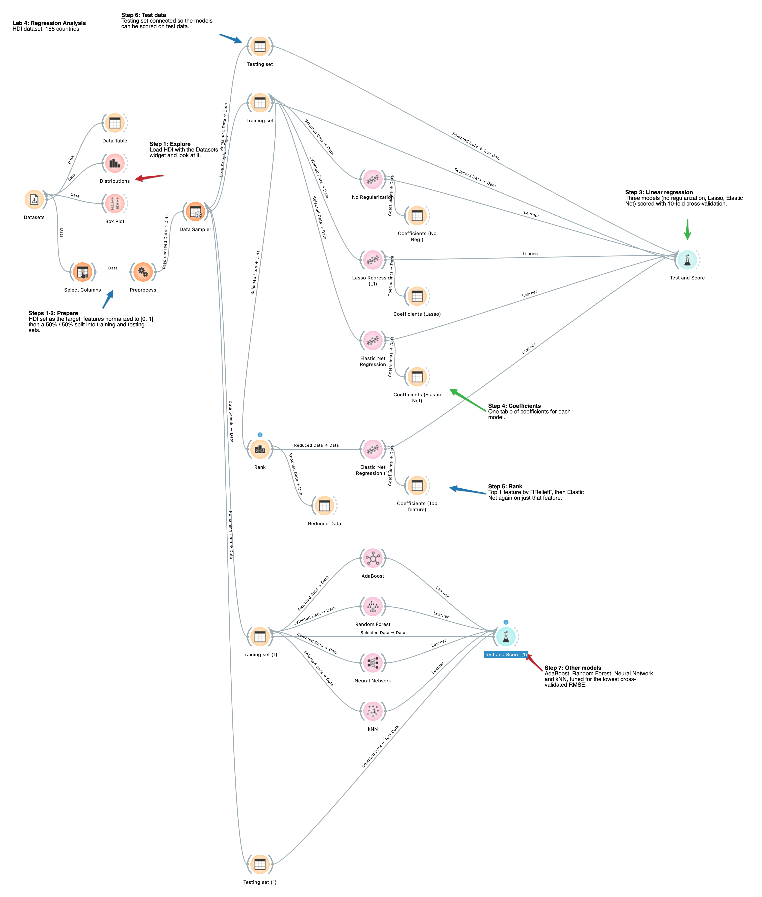